Getting Started with CaseNoter
Set up CaseNoter once
Already set up? Choose Write a note above.
2Open the download
Open your Downloads folder. Double-click CaseNoter-Setup.exe.
Follow the instructions on screen. Keep the suggested folder.
If Windows blocks it, or the suggested folder does not work, ask Dane for help.
3Choose your team
Choose Housing or Education & Employment (EE&T).
Finish Setup. Stay connected to the internet until it finishes.
4Open CaseNoter
Open CaseNoter when Setup offers to. You can also double-click the new CaseNoter icon on your desktop.
Next, open just the section below that applies to you.
I already use CaseNoter — click to open
1Open your old CaseNoter
Open it the way you usually do. Finish saving your notes.
Leave the old CaseNoter and its black window open.
2Start the move in the new CaseNoter
Click Move my existing setup.
The app finds your old setup. If it shows more than one, choose the one you usually use.
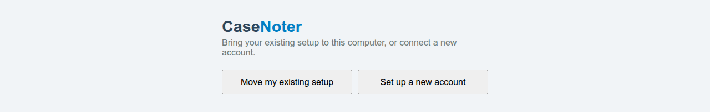
Example only. Click the picture to make it larger.
3Allow the move
A request opens in your web browser.
Check that the transfer code is the same in both windows. In your browser, click Allow this one-time transfer.
If it opens under a different browser account than you usually use, ask Dane for help.
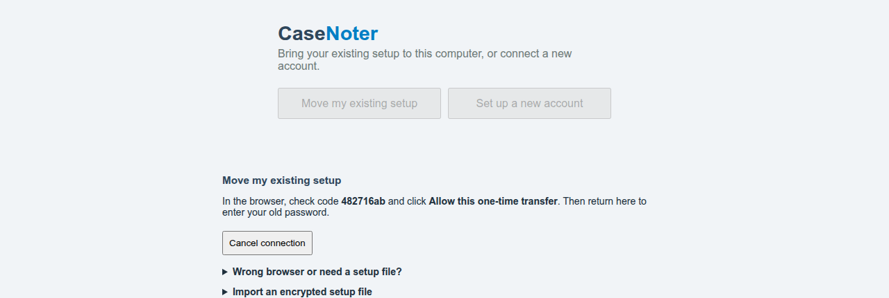
Example only. Click the picture to make it larger.
4Enter your usual CaseNoter password
Go back to the new CaseNoter. Enter your existing CaseNoter password.
Click Import and open CaseNoter. Wait for the app to open.
If it asks to replace a setup, continue only if you mean to replace that setup. Ask Dane if you are unsure.
5Check before you finish
Your passwords stay the same. Check that your team and participants look right.
If you use both teams, check both before removing the old version.
Open Pending requests to review unfinished work. It is not sent to Apricot automatically. Check Apricot before trying those requests again.
If the move fails: keep your old version and ask Dane for help.
I am new to CaseNoter — click to open
You do this only the first time. You will use your own Apricot account.
1Choose a CaseNoter password
Click Set up a new account. Follow the instructions to choose a password and enter it again.
Keep this password private. You will need it each time you open CaseNoter.
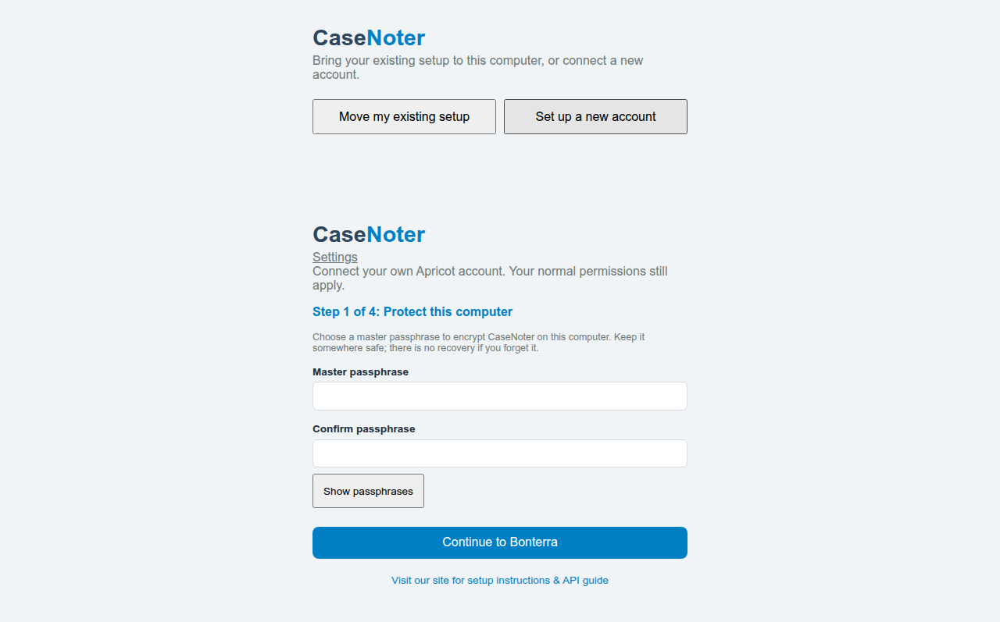
Example only. Click the picture to make it larger.
2Open Bonterra
Bonterra provides the connection details CaseNoter needs to use Apricot.
Open the Bonterra link on the setup screen, or click here to open Bonterra.
Sign in with your own account. Dane can help, but you must sign in and create these details yourself.
Click Manage APIs, then Create credentials.
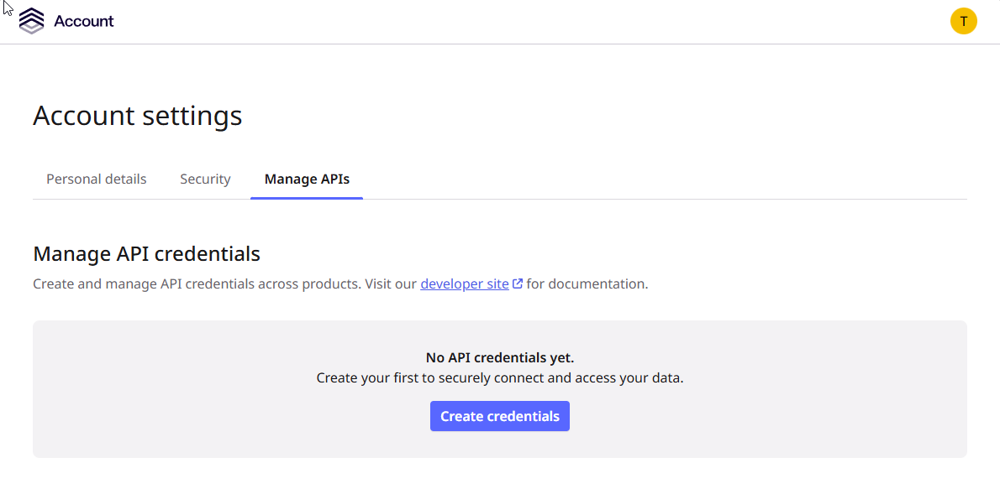
Example only. Click the picture to make it larger.
3Fill in the Bonterra form
- Choose Apricot as the product.
- Enter a name, such as casenote.
- Choose your organization.
- Click Create credentials.
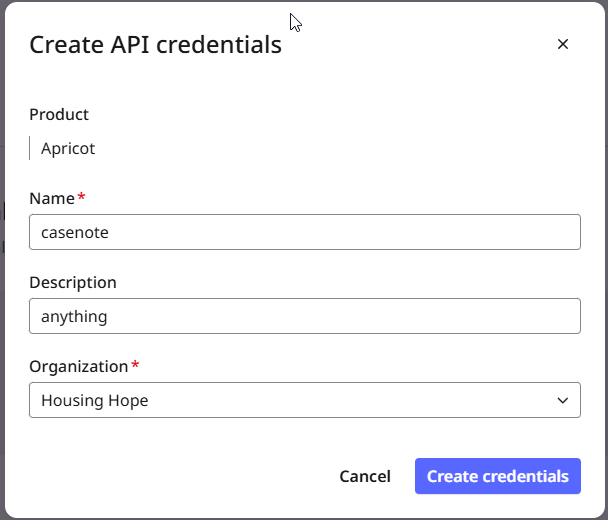
Example only. Click the picture to make it larger.
4Copy the two details into CaseNoter
Bonterra shows two details: Client ID and Client Secret.
- Copy the Client ID. Paste it into the CaseNoter box with the same name.
- Copy the Client Secret. Paste it into the CaseNoter box with the same name.
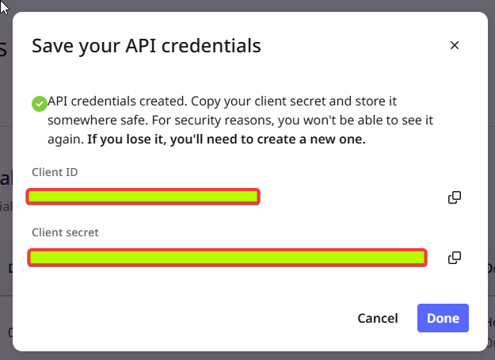
Example only. Click the picture to make it larger.
5Finish and wait
Return to CaseNoter and follow the remaining instructions.
Loading your participants may take a few minutes. Wait for it to finish.
The new connection details may need time to start working. If CaseNoter asks you to wait or retry, follow that message. Ask Dane if you cannot continue.
Forgot your password? Ask Dane before resetting. Resetting removes unfinished work from this computer.
Write a note
These steps are for Housing staff. Education & Employment forms may look different; ask Dane if you need help.
1Open CaseNoter
Double-click the CaseNoter icon on your desktop, or open it from the Windows Start menu.
Enter your password. Click Unlock.
2Find the person
Type the person's name or HMIS number into the search box. Click their name.
Only people with a Housing enrollment appear.
3Choose Contact Documentation
Click Contact Documentation.
Meeting Narrative is being phased out and cannot be selected.
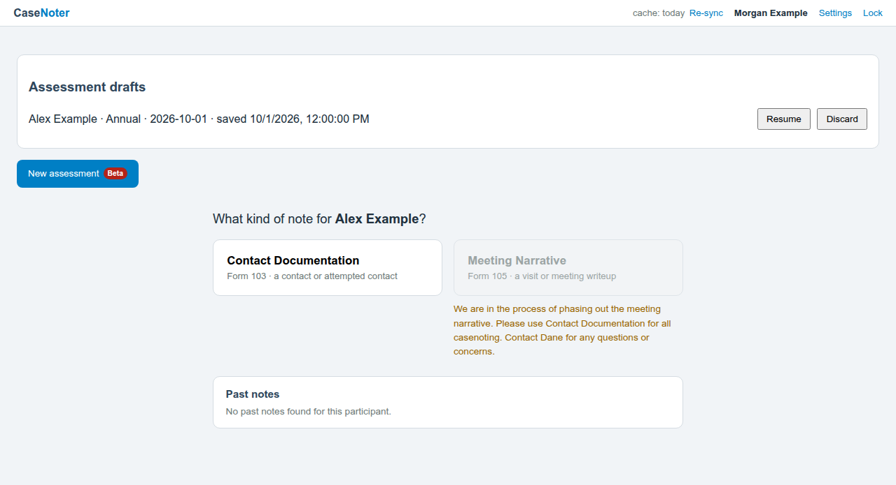
Example only. Click the picture to make it larger.
4Write and check the note
Check the highlighted Housing enrollment. Make sure it is right for the date of your note.
Fill in Date Contacted, Contact Type, Summary, and the other fields.
Add other residents who were present, if needed. Past notes appear below the form.
CaseNoter suggests wording for common abbreviations and flags possible private information. Review these suggestions as you write.
5Save and check the result
Click Save note to Apricot.
Look for Saved to Apricot and a link to the saved record.
Write the same note for several residents — click to open
Use this when the same note applies to several residents. Each person gets a separate note in Apricot.
1Choose the site
Click Browse by site. Choose the site from the list on the left.
2Choose the residents
Tick the box beside each person the note applies to.
- Select all: everyone enrolled at the site.
- Select all heads of household: one note per family.
- Clear: untick everyone.
Check the number selected. Click Write note to 11 (the number will match your selection).
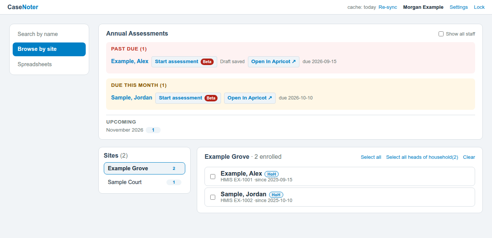
Example only. Click the picture to make it larger.
3Write the shared note
Choose Contact Documentation. Meeting Narrative cannot be selected.
Check the list under This note will be saved for:. Each person is matched to their own enrollment at the site.
Fill in the note once. It applies to everyone on the list.
Other Residents Present stays empty here. To link other residents, write a note for one person instead.
4Save and check each person
Click Save 11 notes to Apricot (the number will match your selection).
Check the result for each person. A confirmed save means Apricot received that note.
If any result is pending or unclear, open Pending requests and check Apricot before trying again. Ask Dane if you are unsure.
Click Done when finished.
Other tools
Open the section for your team when you need it. You can write notes without reading these sections.
Housing: assessments, goals, and spreadsheets — click to open
Housing
Notes, assessment reminders, and resident lists in one place.
See which annual assessments are due
The home screen groups assessments into Past Due, Due This Month, and Upcoming. Open a participant's record in Apricot or choose Start assessment.
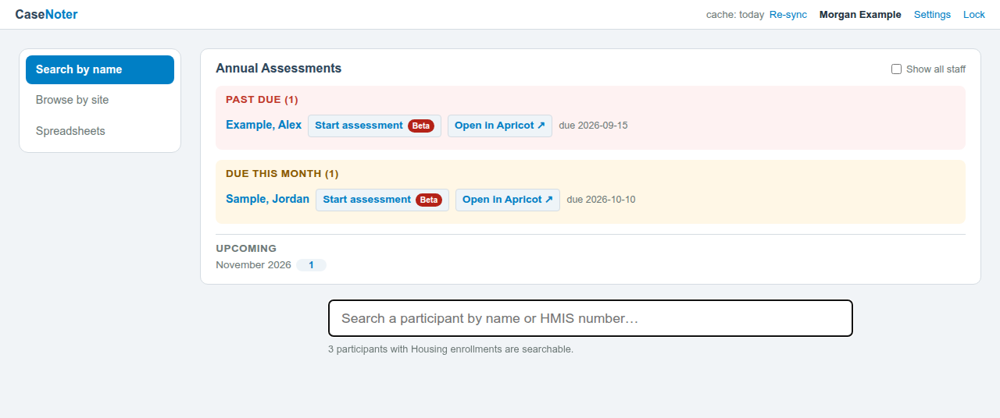
Complete an assessment, or finish it later Beta — still being checked
Use New assessment or Start assessment for an Entry, Annual, Update or 18th Birthday, or Exit assessment. Confirm the household and program, then complete the sections that apply.
Use Save draft and return to keep unfinished answers on this computer. Open Assessment drafts to resume. A draft has not been sent to Apricot.
Assessment tools are marked Beta while checks against Apricot continue. Contact Dane if a question or required answer does not look right.
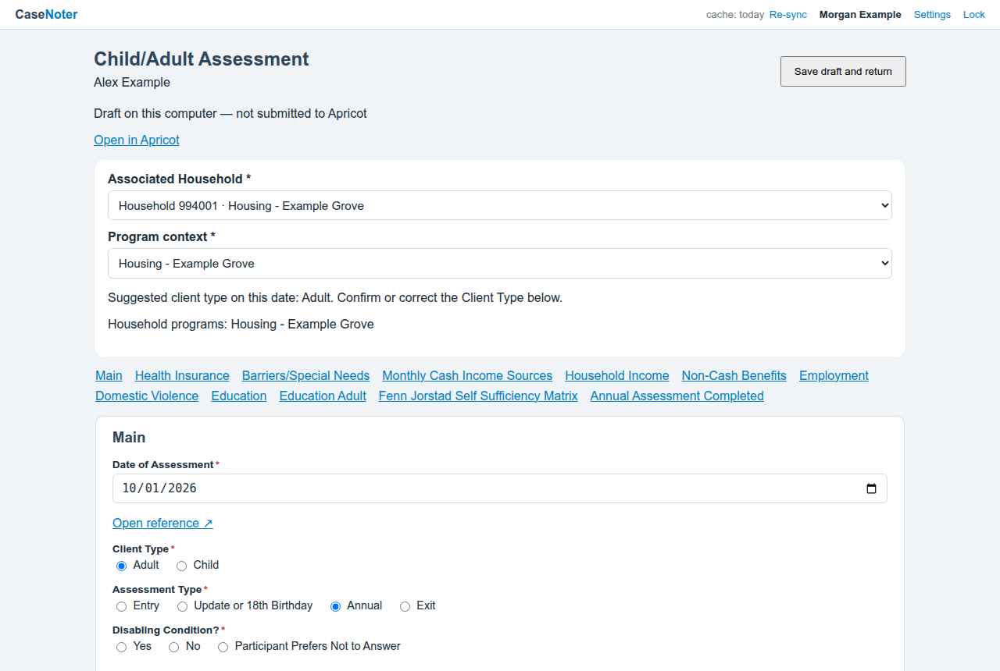
Link the goals you discussed
When writing a Housing contact note, choose the participant's goals that you discussed. You can also review linked goal text in past notes.
Download resident spreadsheets
Open Spreadsheets, choose one or more sites, and generate the resident lists. The files open in Excel and include resident and unit information.
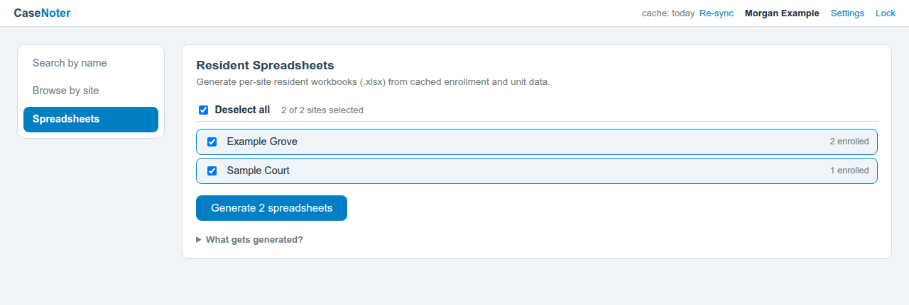
Education & Employment: client lists, hours, and ADP — click to open
Education, Employment & Job Training (EE&T)
Keep your client list, notes, and hours together.
Keep your own client list
Open My clients and add the people you work with. They appear on your home screen and in the weekly hours tool. Your list stays on this computer.
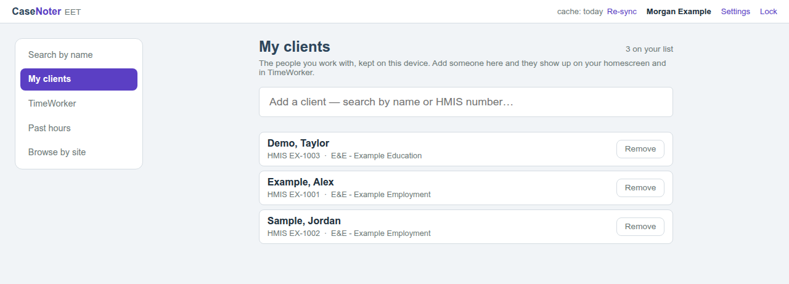
Record time while writing a note
The Time worked section lets you record time for the participant while writing their note. It shows hours already logged for the week. You can save the hours with the note or separately.
Enter weekly hours for several clients
Open TimeWorker, choose the start of your week, and enter hours for people on your client list. Choose the program and activities for each person, then save the entries together.
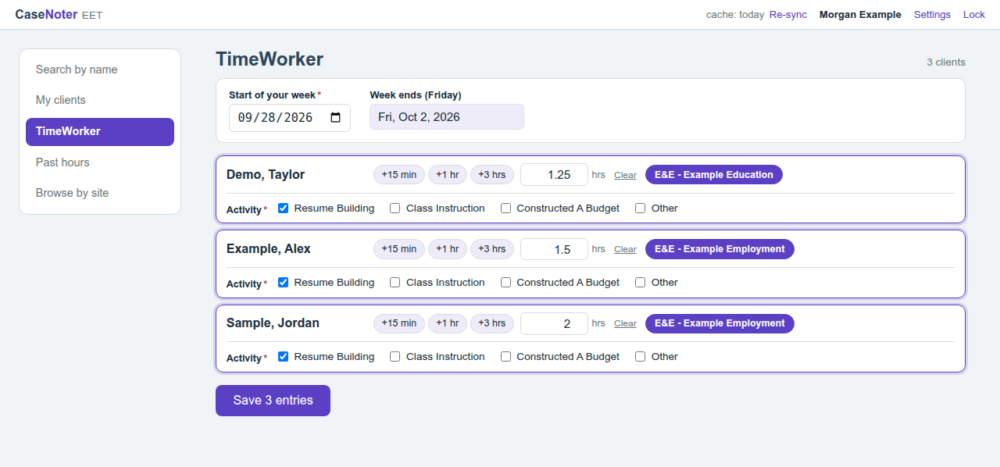
Review hours by person and program
Open Past hours and choose a date range. Check the hours recorded for each person, plus weekly totals for each program.
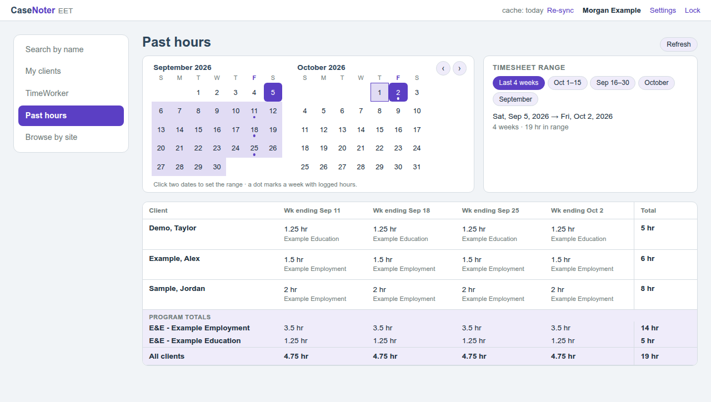
Prepare your ADP timesheet Optional Beta — still being checked
If you have been invited to use the ADP Beta, enable it in Settings. Ask Dane for access and help setting up your funding codes and percentages.
Once set up, CaseNoter can group logged hours by funding code and prepare entries to copy or type into ADP. Review the totals and any adjustments before using them. CaseNoter does not submit your payroll timesheet to ADP.
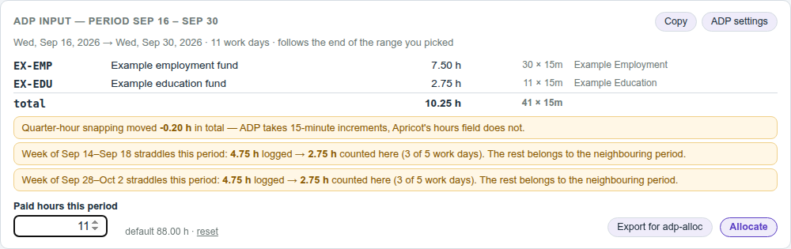
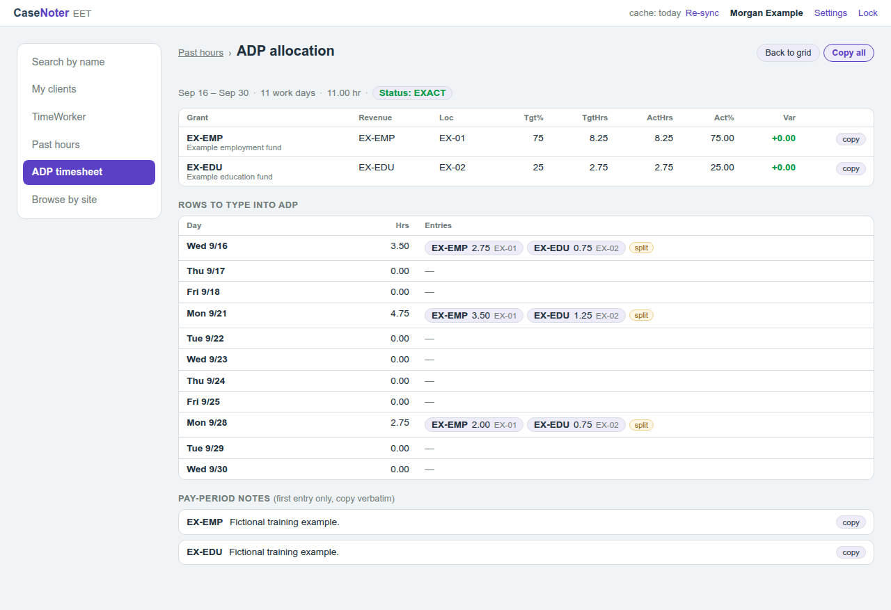
Need help?
Ask Dane if you get stuck. Do not send your password or Client Secret.
CaseNoter will not install or open — click to open
If Windows blocks it, or Setup cannot finish, ask Dane. If Setup asks you to retry, check your internet connection and try again.
CaseNoter cannot find my old setup — click to open
Leave your old CaseNoter and its black window open, then try Move my existing setup again. If it still cannot find it, ask Dane. Keep your old version in place.
The move did not finish — click to open
Keep your old version in place. Follow any retry message in the new app, or ask Dane. Do not start a new account just to get past the problem.
My new connection details do not work yet — click to open
New Bonterra connection details can take time to become active. Follow the wait or retry instructions in CaseNoter.
I cannot find a participant — click to open
Click Re-sync. Check that you opened the correct team. For Housing, the participant must have a Housing enrollment. If they are still missing, ask Dane.
I forgot my password — click to open
Ask Dane before resetting. Your password cannot be recovered, and resetting removes unfinished work from this computer.
My note has not saved, or I am unsure — click to open
Review Pending requests and check the participant in Apricot before trying again. Ask Dane if the result is still unclear.
The enrollment is wrong — click to open
Choose the correct enrollment from the list before saving.
An update did not finish — click to open
Follow the message in CaseNoter. If it will not reopen or the update keeps failing, ask Dane.
Closing CaseNoter, updates, and changing teams — click to open
Locking and closing
Lock asks for your password again when you return. Finish active saves before closing CaseNoter. Closing its window stops the app. Check any pending or unconfirmed requests before treating your work as saved.
Keep CaseNoter on your taskbar
With CaseNoter open, right-click its icon on the Windows taskbar and choose Pin to taskbar. You can use that icon to open it next time.
Refresh the participant list
If a new participant or enrollment is missing, click Re-sync to refresh the list. This may take a few minutes.
Updates
CaseNoter checks for updates when you open it. Updates install automatically and reopen the app. It may ask you to finish your work before restarting. Follow the message on screen; if you want to keep working, decline and install when you are ready.
Your saved setup and passwords are kept. Updating does not send unfinished work to Apricot. If you are offline, you can keep using the current version.
Already installed the 3.0.1 preview?
Close CaseNoter and run the download on the Get started tab once to upgrade. Choose your folder where CaseNoter is already installed. Your setup and passwords are kept. After this upgrade, future updates happen automatically. Contact Dane if you are unsure which version you have.
Change teams
Close CaseNoter and run the downloaded Setup file again. Choose the other team, finish Setup, and reopen CaseNoter. Each team keeps its own saved setup and password. If you have not connected that team yet, follow the setup prompts or move its existing setup.